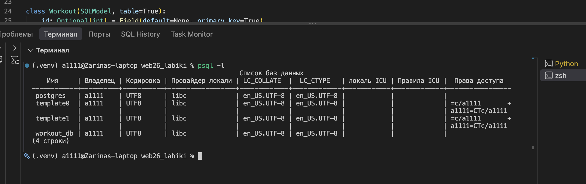
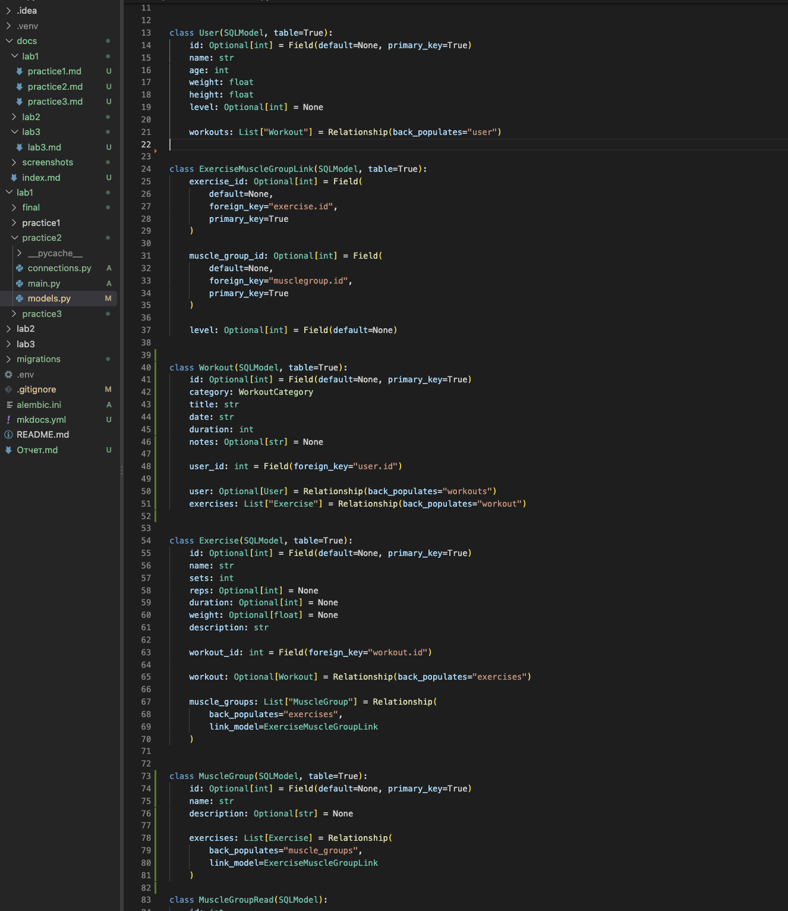
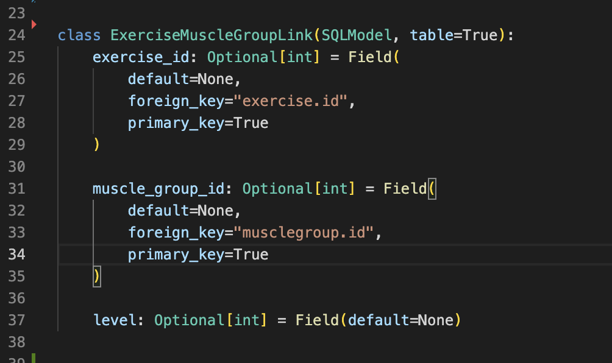
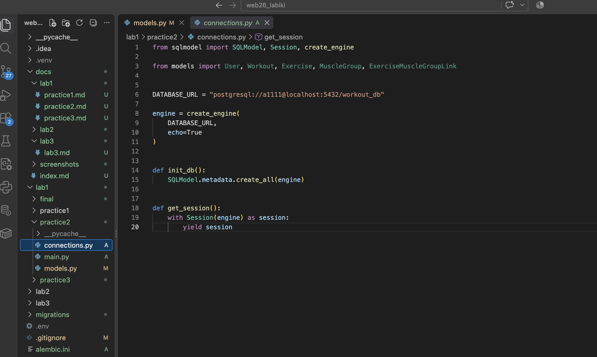
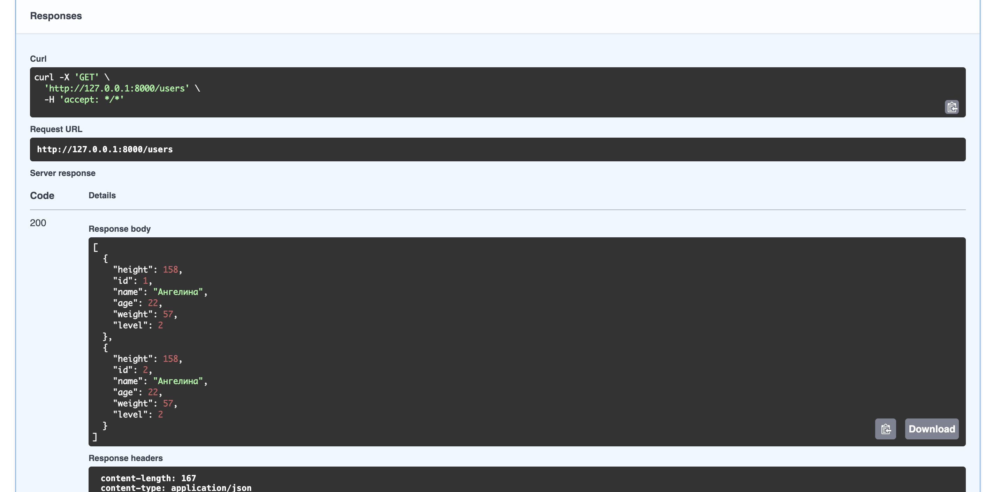
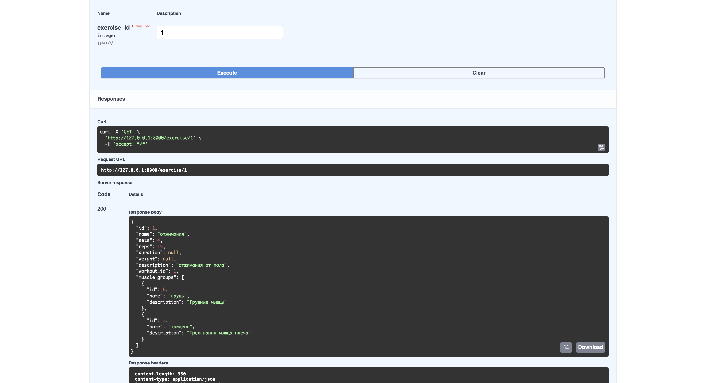

Практика 1.2
Практика 1.2. Настройка БД, SQLModel и работа с PostgreSQL
Цель работы
Цель работы — подключить PostgreSQL к разработанному FastAPI-приложению, заменить временное хранение данных на работу с реальной базой данных, использовать SQLModel для описания таблиц и реализовать взаимодействие с базой данных через сессии.
В рамках практической работы также были реализованы связи между таблицами, включая отношения «один-ко-многим» и «многие-ко-многим».
1. Подключение PostgreSQL
Для хранения данных была создана база данных PostgreSQL workout_db.
Для взаимодействия Python-приложения с PostgreSQL были использованы библиотеки SQLModel и psycopg2-binary.
Проверка наличия базы данных была выполнена командой:
psql -l
В списке баз данных присутствует:
workout_db
Рисунок 5 — Проверка наличия базы данных PostgreSQL

2. Создание моделей SQLModel
В отличие от первой практики, где использовались обычные Pydantic-модели и временные структуры Python, в данной работе модели были реализованы с использованием SQLModel.
Для создания таблиц в базе данных классы наследуются от SQLModel и имеют параметр table=True.
В проекте были созданы следующие основные сущности:
User— пользователь;Workout— тренировка;Exercise— упражнение;MuscleGroup— группа мышц;ExerciseMuscleGroupLink— ассоциативная таблица для связи упражнений и групп мышц.
Рисунок 6 — Модели SQLModel

3. Связи между таблицами
В проекте были реализованы связи нескольких типов.
Между пользователем и тренировками используется связь один-ко-многим: один пользователь может иметь несколько тренировок.
Между тренировкой и упражнениями также реализована связь один-ко-многим: одна тренировка может содержать несколько упражнений.
Для связи упражнений с группами мышц используется отношение многие-ко-многим. Для его реализации создана промежуточная таблица ExerciseMuscleGroupLink.
Схематично структура связей имеет следующий вид:
User
│
│ 1:N
▼
Workout
│
│ 1:N
▼
Exercise
│
│ M:N
▼
MuscleGroup
Ассоциативная таблица также содержит дополнительное поле level, которое позволяет хранить дополнительную информацию о связи упражнения с группой мышц.
Рисунок 7 — Реализация связей между моделями

4. Подключение приложения к базе данных
Для подключения к PostgreSQL был создан файл connections.py.
В нём формируется подключение к базе данных с помощью create_engine, а объект Session используется для выполнения операций с данными.
Также была реализована функция get_session(), которая передаёт сессию базы данных в API-методы приложения.
Таким образом, вместо временных списков из Практики 1.1 приложение теперь работает непосредственно с PostgreSQL.
Рисунок 8 — Подключение SQLModel к PostgreSQL

5. Работа с данными через API
После перехода на SQLModel эндпоинты приложения были изменены для работы с реальной базой данных.
Для получения данных используется объект сессии и запросы select.
Для создания записи объект добавляется в сессию с помощью session.add(), после чего изменения сохраняются методом session.commit().
После создания записи используется session.refresh(), чтобы получить актуальные данные объекта из базы.
Для обновления данных используется частичное изменение объекта через PATCH-запрос. Перед обновлением выполняется проверка существования записи.
Для удаления используется session.delete() с последующим сохранением изменений через session.commit().
6. Проверка CRUD-операций
Работа API была проверена через Swagger UI.
Были проверены операции создания, получения, изменения и удаления пользователей и тренировок.
Например, после создания пользователя запрос GET /users возвращает данные, полученные непосредственно из PostgreSQL.
Рисунок 9 — Получение данных из PostgreSQL через API

7. Проверка связи «многие-ко-многим»
Для проверки связи между упражнениями и группами мышц было создано упражнение и установлены связи с несколькими группами мышц.
Для упражнения «отжимания» были добавлены группы мышц:
- «грудь» —
level = 1; - «трицепс» —
level = 2.
При получении упражнения через API связанные группы мышц отображаются вложенно.
Пример результата:
{
"id": 1,
"name": "отжимания",
"sets": 4,
"reps": 15,
"description": "отжимания от пола",
"workout_id": 1,
"muscle_groups": [
{
"id": 6,
"name": "грудь",
"description": "Грудные мышцы",
"level": 1
},
{
"id": 7,
"name": "трицепс",
"description": "Трехглавая мышца плеча",
"level": 2
}
]
}
Таким образом, результат демонстрирует работу связи «многие-ко-многим» и вложенное отображение связанных объектов.
Рисунок 10 — Вложенное отображение групп мышц для упражнения

Результат работы
В результате выполнения практической работы приложение было переведено с временного хранения данных на работу с PostgreSQL.
С помощью SQLModel были описаны таблицы пользователей, тренировок, упражнений и групп мышц. Были реализованы связи «один-ко-многим» и «многие-ко-многим», а для последней создана отдельная ассоциативная таблица ExerciseMuscleGroupLink с дополнительным полем level.
Также были обновлены API-методы для выполнения CRUD-операций через сессии SQLModel. Работу API и вложенное отображение связанных объектов удалось проверить через Swagger UI.